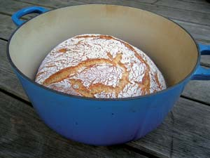
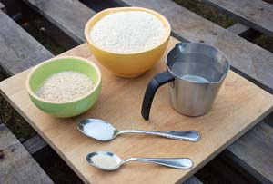
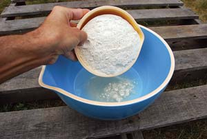
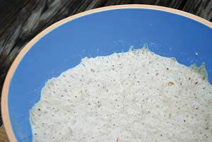
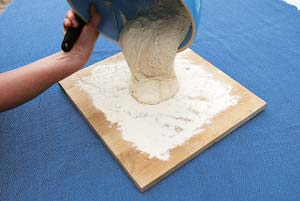
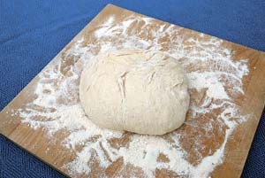
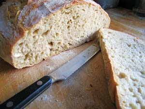

Picture a bowl of soup or a salad without a slice of crusty bread to go with it. Worse still, imagine a deliciously tangy piece of Camembert cheese, served with a glass of red wine, but no accompanying hunk of baguette. Quelle horreur! as the French would say.
Much has been written over the centuries about bread’s importance in global cuisine. Legendary American chef and food writer James Beard called it the “most fundamentally satisfying of all foods” and referred to bread served with fresh butter as the “greatest of feasts.” True to form, the Italians are even more dramatic in describing bread’s essential role. “Senza il pane tutto diventa orfano,” they say, which means “without bread, everyone’s an orphan.”
About six years ago, I felt orphaned myself. I had just returned from 10 years living in Europe where artisan bread is so common you almost trip over the stuff in the streets. The same cannot be said of my native state of Maine, where Wonder Bread still leads wonderful bread by a comfortable margin. If you trip over anything in the winter-worn streets of Maine, it’s more likely to be a frost heave.
Bread had become so fundamental to my culinary happiness that I realized upon returning to the States that I needed to knead some of my own. After five years playing around with different recipes and techniques, I reluctantly came to terms with my limits as a home baker. I could produce zucchini and banana breads to die for, a decent sandwich loaf in both white and whole-wheat varieties, and a perfectly respectable foccacia.
What I couldn’t produce, unfortunately, was the type of bread I craved the most: a hearty, round rustic loaf with a moist, chewy crumb (inside) and a thick, crispy crust.
Fortunately, my return proved to be well-timed in that it coincided with an artisan bread-making revival making inroads in Maine. I became a regular customer of Standard Baking Co., a Portland-based bakery that turns out breads and pastries that rival Europe’s finest. What I couldn’t bake myself was available just a few minutes and a few dollars away.
But for people like me who grow some of our own food and cook from scratch, close foods can never be quite close enough. I remained committed to being able to produce the loaf of my dreams in my own kitchen. On a Saturday morning bread run to Standard, I asked one of the bakers her secret to a crusty loaf. She replied “quality ingredients, time and a $10,000 professional baking oven.” Ugh. That was not what I wanted to hear.
She went on to explain that the secret to a loaf that is soft and moist on the inside and crusty on the outside lies in the careful balance of heat and humidity. Professional baking ovens achieve this balance via high temperatures and blasts of steam during the cooking process.
Over the years, ingenious home bakers have tried to replicate the humid conditions of a commercial oven by placing a pan filled with water at the bottom of the oven or by spritzing their loaves with water from time to time. My own experiments in moisture management, however, left me frustrated. The quality of my loaves just didn’t do justice to the time and work that went into making them.
Just when I was ready to give up on crusty, peasant loaves altogether, I came across an article in The New York Times that described a new bread-making technique, the results of which sounded too easy and too good to be true. Dubbed “no-knead bread,” the method involves using wet dough, letting it rise over a very long time in lieu of kneading it, and cooking it in a hot Dutch oven (heavy covered pot). While the recipe calls for a slow fermentation process, its popularity proved an instant success. The recipe (below) was shared and devoured by foodies all over the world via the Internet.
Excited at the prospect of finally creating a crusty loaf of my own, I couldn’t wait to try the technique myself. I was also curious to see if it really was possible to come up with something new in a field as old as bread-making. As if that weren’t enough, I had indulged myself the year before with a $120 cast iron Dutch oven that had thus far not seen much action. I pictured myself cranking out one crusty loaf after the next, and did some quick math to calculate how many loaves I’d need to make before recouping my investment.
From the first attempt, my results - like those of others who’ve used the technique - have been nothing short of miraculous. Not only are my loaves delicious, but they are drop-dead gorgeous, every bit as pretty as the ones I was tripping over in Europe. The long, knead-free fermentation process allows the dough to develop good flavor, while the Dutch oven creates the humid conditions needed for a crisp crust. Those of you who have been foiled in your home-baking efforts in the past can find new hope in this technique, which is as forgiving as it is flexible.
Although I may still be a loaf or two shy of paying for my fancy-pants Dutch oven, I’m getting close and am even starting to think about new challenges. Next time I make a Saturday morning bakery run, I think I’ll ask the baker the secret of a buttery chocolate croissant. With my baking confidence at a new high, I just might be up to the task.
1/4 tsp active dry yeast
1 1/2 cups warm water
3 cups all-purpose flour, plus more for dusting. You may use white, whole wheat or a combination of the two.
1 1/2 tsp salt
Cornmeal or wheat bran for dusting
Yield: One 1 1/2-pound loaf.
Adapted from The New York Times.
Click here to watch a short video demonstration of the no-knead technique. You can also learn more about the science of baking and unlock the mystery of why the Dutch oven technique works so well.
We're putting together the first Mother Earth News cookbook, and would love for you to share you own variations of the No-Knead Bread recipe with us. E-mail your recipes to letters@MotherEarthNews.com.
|
 ROGER DOIRON This easy bread recipe requires no kneading, and uses the heat and humidity of a Dutch oven to achieve the perfect crispy crust. |
 ROGER DOIRON Wonderful bread requires nothing more than yeast, water, flour and salt. |
 ROGER DOIRON Once the yeast has been dissolved in the warm water, it’s time to add the flour and salt. You can use white or whole-wheat flour, or a mixture of both. |
|
 ROGER DOIRON When its surface is dotted with bubbles (from fermentation), the bread dough is ready for Step 2 of the No-Knead Dutch oven recipe.
|
 ROGER DOIRON In Step 3, gently shape the bread dough into a ball. No kneading is required.
|
 ROGER DOIRON This bread requires no kneading, but the dough needs to undergo a long fermentation process to develop good flavor and rise appropriately. |
|
 ROGER DOIRON Knead Dutch Oven bread is easy even for novice home bakers. |
|
|